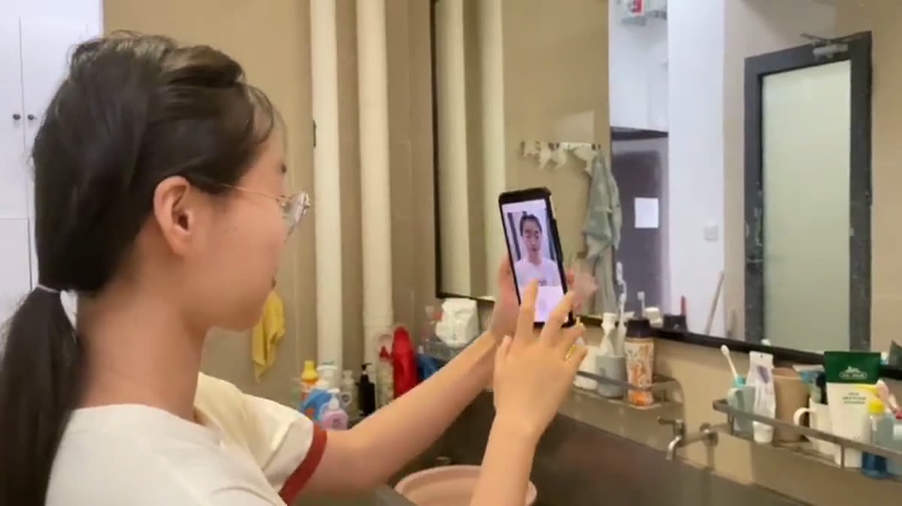
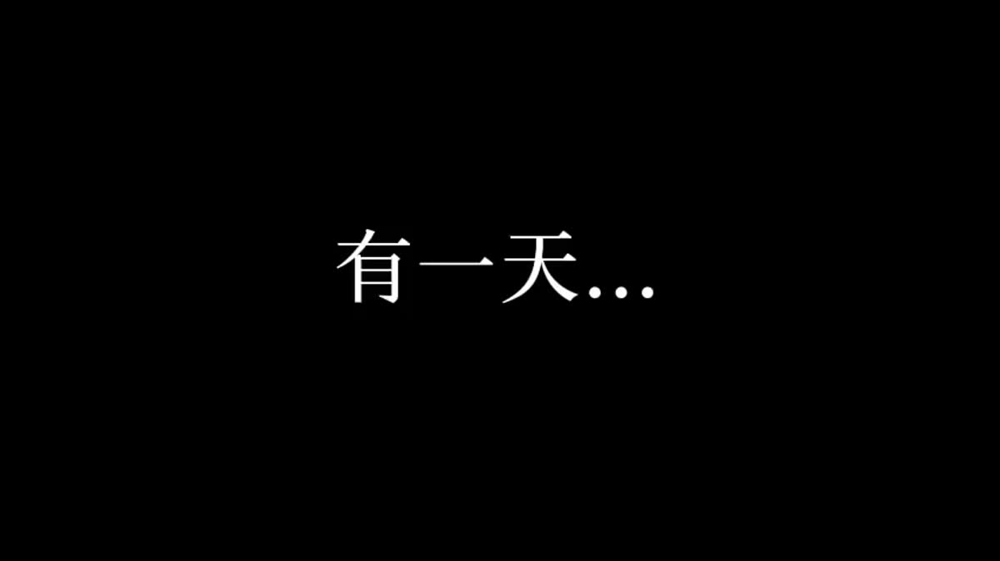
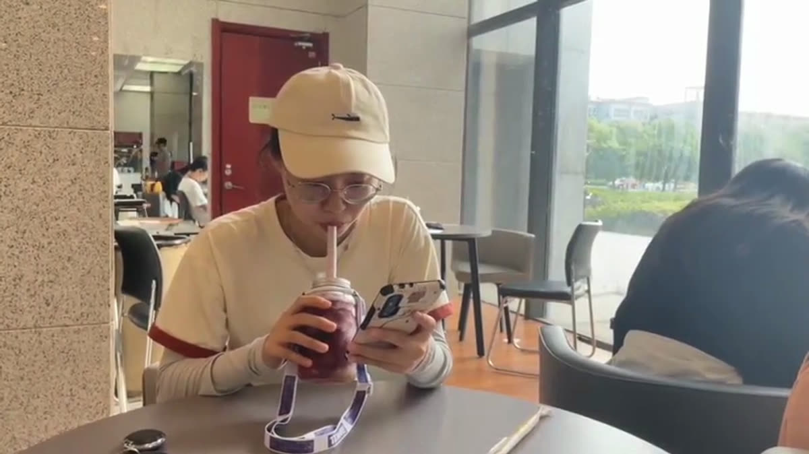
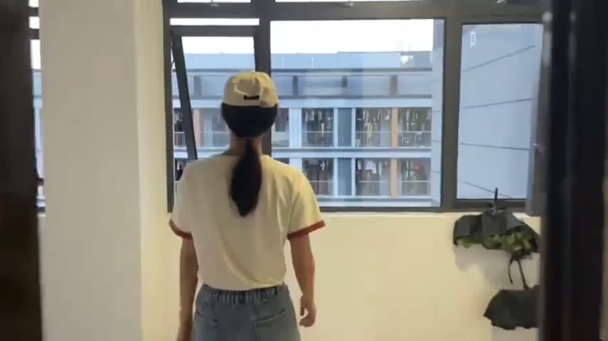

广告 · 02
公益广告《甩不掉的黑盒子》
不是人们在玩手机，而是手机在玩人们。而当人真正意识到这件事时， 已经很难甩掉它了。片尾落在一句话：没有手机的世界，也很美好。
- 年份
- 2022
- 类型
- 公益广告
- 时长
- 2′29″
- 镜头
- 30 个
- 软件
- Premiere Pro · 剪映
完整成片 · 2 分 29 秒
选题与创意Concept
这是「听我说南邮」公益广告模块的作品，主题是放下手机。 选题来自最日常的观察：手机仿佛长在了手上。
但在搜集同类作品时我们发现一个问题——这个题材的镜头几乎被拍烂了： 走路看手机忽略朋友、吃饭看手机抬头发现朋友已经走了。 如果沿用这些场景，作品会立刻变成背景噪声。
所以我们在确定场景时特别追求题材与结构的新颖性， 选取了具有前后对比性的戏剧性场景：
- 一边倒水一边刷手机，水漫出杯口才发现
- 每天对着美颜相机自拍，最后在镜子里认不出真实的自己
- 刷到一杯“看着很好喝”的奶茶，翻相册才发现那是自己上次喝过的
- 一个夸张镜头：手机被胶带绑在手上，怎么甩也甩不掉
这些场景前后有反差、自带戏剧结构，比单向的说教更让人记得住。
表现手法
- 无对白：人物内心独白全部以整屏字幕呈现，居中压在黑屏上，制造代入感
- 字体分层：标题与片尾标语用手写字体，内心独白统一用宋体
- 黑场转场：用淡入淡出的黑屏区隔不同场景，让观众产生明确的段落感
- 大量主观镜头：人物看手机的近景，下一镜直接切到他所看到的屏幕内容
关键画面
四个具有前后对比性的戏剧性场景，直到结尾放下手机




分镜头稿本Storyboard
以下为完整分镜头稿本（共 30 个镜头）。景别缩写：全＝全景、中＝中景、近＝近景、特＝特写； 技巧缩写：固＝固定、跟＝跟镜头、推＝推镜头、摇＝摇镜头。 背景音乐为《Yumeji's Theme》。
← 表格可左右滑动查看完整内容 →
| 镜号 | 景别 | 技巧 | 时间 | 画面 | 音响 | 备注 |
|---|---|---|---|---|---|---|
| 1 | 中 | 固 | 4s | 主人公侧面，一边倒水一边玩手机 | 倒水声 | 全片配乐《Yumeji's Theme》 |
| 2 | 特 | 固 | 4s | 水壶倒水特写，水渐渐漫出来 | ||
| 3 | 特 | 推 | 3s | 主人公擦拭桌上的水，桌上手机依然在播放视频。出现“甩不掉的黑盒子”片名字幕 | 片名镜头 | |
| 4 | 特 | 固 | 3s | 主人公滑动挑选美颜相机的滤镜 | ||
| 5 | 近 | 固 | 3s | 主人公伸出手机自拍 | ||
| 6 | 特 | 固 | 4s | 主人公滑动手机看自己美颜相机拍的照片 | ||
| 7 | — | — | 2s | 镜 6 黑屏转场到该镜，出现“美颜相机里的我真好看”字幕 | 黑屏转出 | |
| 8 | 中 | 跟 | 5s | 主人公在路上行走，低头玩手机 | ||
| 9 | 中 | 跟 | 8s | 主人公拿着奶茶走到座位前，坐下，全程盯着手机 | ||
| 10 | 中 | 固 | 2s | 主人公举起手机给奶茶拍照 | ||
| 11 | 中 | 固 | 7s | 主人公一直看着手机，心不在焉，另一只手拿起奶茶喝 | ||
| 12 | 特 | 固 | 11s | 主人公手机里所看视频的特写 | 主观镜头 | |
| 13 | — | — | 4s | 镜 12 黑屏转场到该镜，先后出现“这个奶茶看着很好喝，下次我也要去喝”“有一天…”字幕 | 黑屏转出 | |
| 14 | 中 | 固 | 3s | 主人公坐在桌前翻自己的手机相册 | ||
| 15 | 特 | 固 | 4s | 主人公手机翻相册特写 | ||
| 16 | 中 | 固 | 3s | 主人公身体前倾，仔细看手机，表示惊讶 | ||
| 17 | 特 | 固 | 3s | 主人公翻手机相册，翻到之前喝的奶茶照片 | ||
| 18 | — | — | 2s | 镜 17 黑屏转场到该镜，出现“这不就是我上次刷到的奶茶吗”字幕 | 黑屏转出 | |
| 19 | 特 | 固 | 7s | 主人公翻之前刷到的视频，进行查看 | ||
| 20 | 中→近 | 跟 | 10s | 主人公在路上行走，低头玩手机，镜头从正侧到正面 | 此处合理越轴，插入摄像机移动越过轴线的镜头 | |
| 21 | 特 | 固 | 4s | 主人公刷手机，手机被胶带绑在手上 | 夸张性镜头 | |
| 22 | 中 | 固 | 6s | 主人公低头刷手机，想把手机放进口袋里，发现放不进去，开始用力甩手机 | ||
| 23 | 特 | 固 | 2s | 甩手机特写 | ||
| 24 | — | — | 2s | 镜 23 黑屏转场到该镜，出现“我甩不掉手机了”字幕 | 黑屏转出 | |
| 25 | 近 | 固 | 7s | 主人公放下手机看镜子里的自己，怅然，用手擦拭镜子 | ||
| 26 | — | — | 5s | 黑屏转场，先后出现“我认不出镜子里的自己了”“或许…我应该放下手机了”字幕 | 黑屏转出 | |
| 27 | 近 | 跟 | 13s | 主人公在座位上看手机，放下手机，走出宿舍，到窗边向外眺望 | ||
| 28 | 特 | 固 | 4s | 主人公将手机放入口袋中 | ||
| 29 | 全 | 摇 | 8s | 主人公周边明媚的景色 | ||
| 30 | — | — | 3s | 镜 29 黑屏转场到该镜，出现“没有手机的世界，也很美好”片尾字幕 | 黑屏转出 |
分镜头稿本逐条录自作品的制作报告原文。
制作过程Process
策划选题
通过观察身边的人和事，锁定“沉迷手机”这一社会现象。 结合生活化场景更容易引起共鸣，也更容易引发思考。
接着搜集同类作品做差异化分析，避开被用滥的场景， 改为设计具有前后对比性的戏剧结构。
撰写分镜头稿本
按镜号写明景别、技巧、时长、画面、音响与备注。 撰写时特别注意画面的视觉造型性——描写必须具体， 避免空洞的逻辑推理式叙述与抽象概念化的讲解。
分镜头稿本让摄影师有依据可拍，也让演员与其他成员提前理解导演意图。
拍摄
先确定机位与镜头景别，和演员沟通走位并预演，再进行实拍。 难点在运动镜头：跟镜头和摇镜头容易抖动，为达到“平稳匀准实” 做了多次练习；推拉镜头则要练习均匀调焦，避免失焦。
一个场景分段拍摄，特写镜头在多个角度各拍一遍备用。 每拍完一个运动镜头都立即回看检查，需要重拍就当场重拍。
剪辑与调速
素材导入 Premiere Pro，先按分镜头稿本确定镜头先后逻辑做粗剪。 添加背景音乐后，依音乐节奏二次剪辑； 过长的片段裁剪后再做调速，让画面更贴合节奏、观感更舒适。
调色与音频
不同地点拍摄的画面色调不一致，显得突兀。 在颜色面板中微调曲线，调整亮度、对比度、饱和度与色温，使画面相得益彰。
拍摄时环境音过大，原始声音无法再利用， 因此另找音频素材导入，并用关键帧控制音量增益曲线。
转场与字幕
用 Premiere 自带的黑场过渡实现段落区隔，背景音乐用交叉淡化做淡入淡出。 字幕在剪映中添加——它自带的字体更贴合视频需求： 标题与片尾标语用手写字体，内心独白统一用宋体。
制作小结Reflection
镜头组接的四条原则
- 符合逻辑：既要符合生活逻辑，也要符合观众的思维逻辑
- 造型衔接的有机性：同一主体的活动保持在画面同一区域，后一镜头主体位置与前一镜头结束时一致
- 画面方向的统一性：遵循轴线规律，镜头保持在轴线一侧 180° 以内；需要多样角度时做合理越轴
- 主体动作的连贯性：遵循“静接静、动接动”，运动镜头与固定镜头组接时保留起幅或落幅
片中主人公低头走路刷手机的段落就用到了合理越轴： 插入一段摄像机移动越过轴线的镜头，建立起新的轴线，使镜头过渡顺畅。
无技巧转场的运用
切，即画面的直接切换，简洁明快，能赋予画面较强的节奏感。 常见的跳切依据包括相似性元素、空镜头、特写、声音与主观镜头。
本片中，从主人公倒水的中景切到杯子的特写，依据的是杯子位置的一致性； 而大量“人物看手机的近景 → 手机屏幕内容”的切换， 则是典型的主观镜头跳切。
字幕设计
因为全片没有对白，内心独白被处理成整屏字幕、居中显示在黑屏区域， 让观众产生代入感，也更容易理解作品寓意。